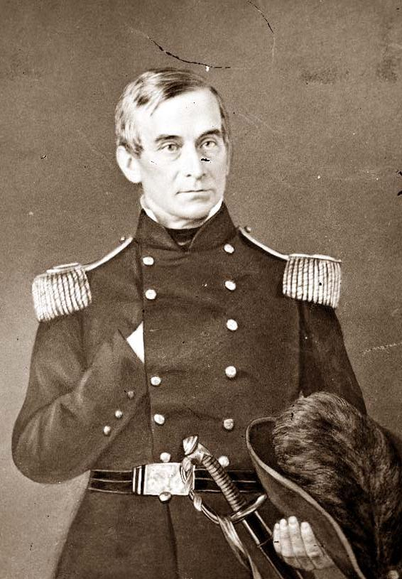
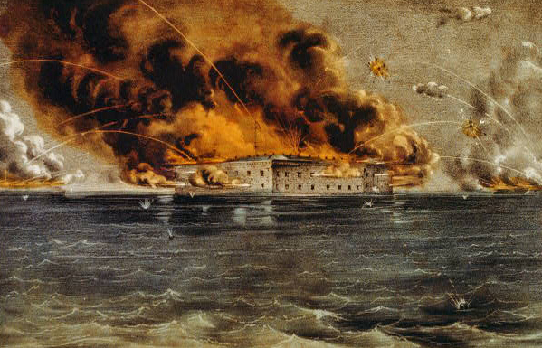
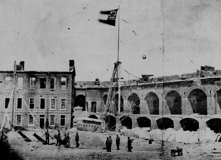

|
Located on a manmade island at the entrance to Charleston
Harbor, Fort Sumter was the site of the first shots of the
Civil War. Attention was first drawn to this Federal
|

Maj. Robert Anderson, commander
of the U.S. garrison at Fort Sumter.
|
outpost immediately following the election of Abraham
Lincoln in November 1860. Fort Sumter was owned by the
Federal government, but not yet occupied by U.S. troops due
to its construction having just been completed. South
Carolinians, who had recently seceded from the Union, found
the garrison to be a threat to their security and a
challenge to their sovereignty. The Charleston Mercury
explained to its readers that other Southern states would
never take the cause seriously until "we have proven that a
garrison of seventy men cannot hold the portal of our
commerce."
South Carolina's governor, Francis Pickens, claimed he
had an unwritten agreement with President James Buchanan.
The agreement was that U.S. Major Robert Anderson (who
commanded the Federal forces in Charleston harbor) and his
men would remain at Fort Moultrie, another fort in the
Charleston Harbor. Anderson, however, viewed Fort Moultrie
as indefensible from land and therefore considered moving
his men to the more secure location provided by Fort Sumter.
Immediately after Anderson received authorization to do
just that from the Buchanan Administration, he relocated his
men to Fort Sumter. On the night of December 26, 1860,
Anderson moved his small force onto boats and occupied Fort
Sumter.
When the news broke, Governor Pickens immediately sent
his military aide, Colonel J. Johnston Pettigrew, to meet
with Anderson and to request that he and his men return to
Fort Moultrie. Anderson refused his request, and in
response Pickens assembled battery units on Morris Island.
Anderson sent word to the Buchanan Administration that his
men needed reinforcements and supplies if they were to hold
Fort Sumter. Buchanan decided to send an unarmed merchant
ship, the Star of the West, loaded with 200 civilian-dressed
recruits, thus reinforcing the fort without overtly
threatening South Carolina authorities. However, despite
the efforts to remain secret, news about the ship's mission
and destination quickly spread after its departure from New
York City on January 5, 1861. As a result, when the ship
neared the Charleston Harbor on January 9th, it was unable
|

The bombardment of Fort Sumter, as portrayed in a lithograph from 1861.
|
to make it past the guns at Fort Moultrie, and it was forced
to turn back and leave Anderson and his men without their
reinforcements and supplies. Following the Star of the West
incident, Pickens added to the ring of battery units that
surrounded Fort Sumter. On January 11th, Pickens sent a note
to Anderson requesting the surrender of the fort. Once
again, Anderson refused, and the opposing forces remained
stalemated for two months.
On March 1, 1861, three days before Abraham Lincoln took
his oath of office, Confederate President Jefferson Davis
assigned Confederate Brigadier General P.G.T. Beauregard
command of the military situation in Charleston.
Immediately Beauregard strengthened the defenses of both
the harbor entrance and the battery units facing Fort
Sumter. Shortly after Lincoln's inauguration, Anderson
reported to the president that the garrison was very low on
supplies and would need reinforcements as well as naval
support to successfully hold the fort. Meanwhile the
Lincoln Administration could not come to an agreement about
the current situation at Fort Sumter. William Seward,
Lincoln's Secretary of State, and General Winfield Scott,
commanding general of the U.S. Army agreed that Anderson and
his men should evacuate the island, but Lincoln felt he
needed to learn more about the situation before making a
decision. As a result, the Lincoln Administration sent a
number of unofficial delegates to determine the situation of
the fort and its occupants.
Despite the pleas of many of Lincoln's advisors,
President Lincoln decided to send relief to Fort Sumter. On
April 6th, Lincoln sent word to Governor Pickens that
reinforcements were being sent to Fort Sumter. The
Administration felt that this warning left it up to the
Confederate authorities as to whether or not a war would
take place, therefore supporting their defensive strategy
concerning the outbreak of the war. On April 10th, the USS
Powhatan left for Fort Sumter.
Following Lincoln's message to Pickens, the Confederate
Secretary of War, Leroy Pope Walker, instructed Beauregard
to demand that Anderson surrender the fort, and to conquer
the fort if Anderson refused the request for surrender.
Upon receiving these instructions, Beauregard began
positioning his men and equipment in order to prepare
adequately for an artillery assault on Fort Sumter as well
as to prevent any reinforcements from successfully landing
and re-supplying the fort.
On the afternoon of April 11, 1861, a Confederate
delegation was sent by Beauregard to Fort Sumter to demand
the immediate surrender of the fort. After a unanimous vote
by the Federal officers, Anderson once again refused to
|

A photograph of Fort Sumter as it appeared
after the bombardment.
|
evacuate. As a result, Chesnut replied that firing would
begin early the next morning. At 4:30 a.m. on April 12,
1861, a signal gun was fired alerting all the batteries to
being firing-the Civil War had begun.
Despite a hard first day's fight for Anderson and his
men, the end seemed in sight when the garrison spotted three
U.S. ships off the harbor. However, unbeknownst to them at
the time, the reinforcement ships would never be able to
make it past the harbor entrance batteries, and therefore
would not be able to assist Anderson. As a result, after
deliberating with Beauregard's delegates, Anderson set the
time for the surrender for the following day, April 14,
1861.
The first shots had been fired in the Civil War. Though
the opening volleys were not deadly, they opened the door to
a conflict that cost both North and South dearly in both men
and money. On April 15, 1861, President Lincoln issued a
call for 75,000 volunteers to help restore the Union, and
Jefferson Davis responded in kind. Preparations began in
earnest for America's Civil War.
Source: Joan Waugh, ed., Facts on File Encyclopedia of American
History: Civil War and Reconstruction, 1856 to 1869 (New York: Facts on
File, 2003), 135-137.
|